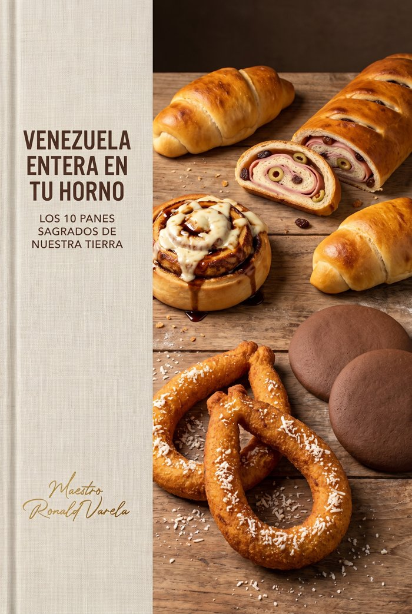
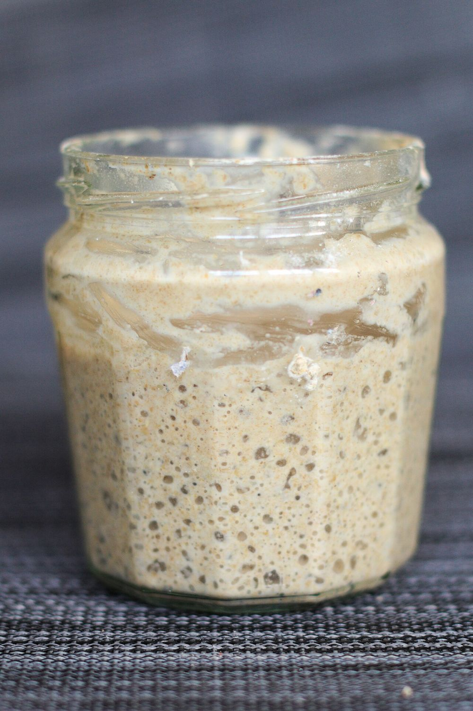

Ingresá el código de acceso que llegó a tu correo con la compra.
¿No tenés el código? Revisá el correo de tu compra o escribinos.Los 10 panes sagrados de nuestra tierra · Maestro Ronald Varela
Tu Biblia te dio los secretos del Táchira. Este libro te da el resto del país: los panes que huelen a diciembre en Caracas, a desayuno en Maracaibo, a merienda en Oriente.
Cada receta viene con cantidades exactas, temperaturas y mis secretos — igual que tu Biblia. No hay adornos: hay pan de verdad.
Horneá con amor y compartí. Cada olor que salga de tu cocina es un pedacito de casa que vuelve.
— Maestro Ronald Varela
El alma tachirense en cada masa de este libro.

Todas las masas de levadura de este libro se pueden hacer con tu talvina (la de tu Biblia):
El sabor se vuelve otra cosa: más profundo, más nuestro. La levadura hace pan; la talvina hace memoria.
→ usá 150 g de talvina activa y sumá 1 hora extra al primer levado.
Con tu Biblia dominaste el Táchira. Con este libro tenés el país completo en tu horno. Ahora cada olor que salga de tu cocina es un pedacito de Venezuela que vuelve.
¿Y sabés qué pasa cuando tu casa huele así? Que los vecinos preguntan. Que la familia encarga. Que alguien te dice "yo te los compro".
Cuando llegue ese momento — y va a llegar — acordate: tu horno puede pagar la renta.
El negocio ARMADO: la tabla de costos de tus 22 recetas ya calculada, etiquetas listas para imprimir, mensajes de WhatsApp palabra por palabra y el plan de 14 días hasta tu primer cliente fijo.